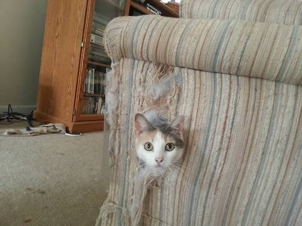
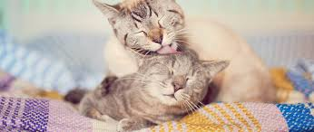

-
Son de hábitos crepusculares o nocturnos lo que coincide en parte con los tiempos que le puede dedicar el
ser humano urbano moderno. Los gatos son ágiles y flexibles y a menudo asombra cómo pueden pasar por
determinados lugares o manejar su cuerpo con ductilidad y fineza superlativa.

-
Las gatos son carnívoros obligados y pueden sobrevivir sin vegetación. Los felinos salvajes suelen cazar
pequeños mamíferos a lo largo del día para mantenerse alimentados. Sin embargo, los gatos domésticos están
acostumbrados a una vida relajada y por tanto comen cantidades más pequeñas pero de manera más regular.
-
Cuando viven en libertad, los gatos dedican mucho tiempo y energías buscando presas: la media es de 3,5
horas al día dedicadas a la caza, pero con extremos que llegan a las 11 horas diarias. Cada salida de caza
dura aproximadamente 30 minutos.
-
Los gatos, como especie, tienen un sistema social flexible. Pueden vivir solos o en grupos, si hay recursos
suficientes. Cuando hay suficientes fuentes de alimentos, las hembras, que suelen estar emparentadas, pueden
vivir en colonias y colaborar para cuidar y criar a sus gatitos.

-
Los gatos son animales nocturnos. En estado salvaje, cazarían durante la noche, pues su cuerpo está diseñado
para ello. De ahí que sea normal que un gato doméstico tenga la predisposición natural de dormitar durante
el día y activarse cuando se pone el sol.
-
A los gatos les encanta que les toquen alrededor de las zonas en las que se localizan las glándulas
faciales, como la base de las orejas, bajo la barbilla y cerca de las mejillas. Los humanos, por su parte,
somos seres inherentemente sociales para los que el acercamiento y el contacto son muestras de afecto.
-
Los gatos reconocen la voz, el olor y las caricias de esa persona y las asocian con las experiencias vividas
juntos. Cada uno es diferente y su forma de relacionarse depende de sus experiencias. No todos los gatos
tienen una preferencia por una sola persona, y a veces puede ser difícil identificar quién es su favorito.
-
Los gatos prefieren dormir en superficies mullidas (Crouse et al., 1995). Cuando disponen de un cojín o de
una camita para dormir hacen cosas que no suelen hacer cuando tienen que dormir encima de una superficie
dura como, por ejemplo, enroscarse para dormir o amasar con las patas.
-
Además de ser compañeros leales, los gatos también son excelentes cazadores de insectos y roedores. Su
instinto cazador les permite mantener tu hogar libre de plagas no deseadas, lo que brinda una protección
adicional para ti y tu familia.
-
Los gatos son animales que están constantemente alerta, incluso cuando duermen, atentos a cualquier
movimiento. Tú le das seguridad. Si se acurruca contigo tiene la sensación de que no va a pasarle nada malo,
se siente protegido y puede dormir a pierna suelta.